Overview
In this post, I’ll describe how you can use Azure DevOps build and release pipelines to build your PCF control from source control and deploy it to a Power Apps environment. I’ll be building a single PCF control and only deploying to one environment, but this process can be expanded to handle multiple PCF controls and deploy across many environments
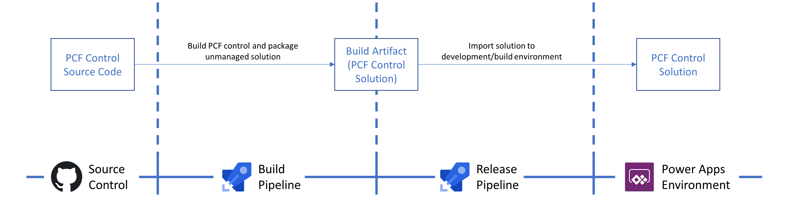
I’ll be using an unmanaged solution package type throughout the build pipeline. This is because the resulting solution will only ever be installed in my development/build environment. From there, the PCF controls within can be added to another solution to be exported as managed for deployment to downstream environments.
Creating the build pipeline
From the pipelines area of your Azure DevOps project, select the Create pipeline button. I’m not a fan of using YAML so I choose to click Use the classic editor at the bottom of the page.
Next, let the pipeline know where your PCF control source is - my control source code is in GitHub so I’ve provided an existing connection, specified the repository, and branch. On the next step, select the Empty job link instead of using one of the suggested templates.
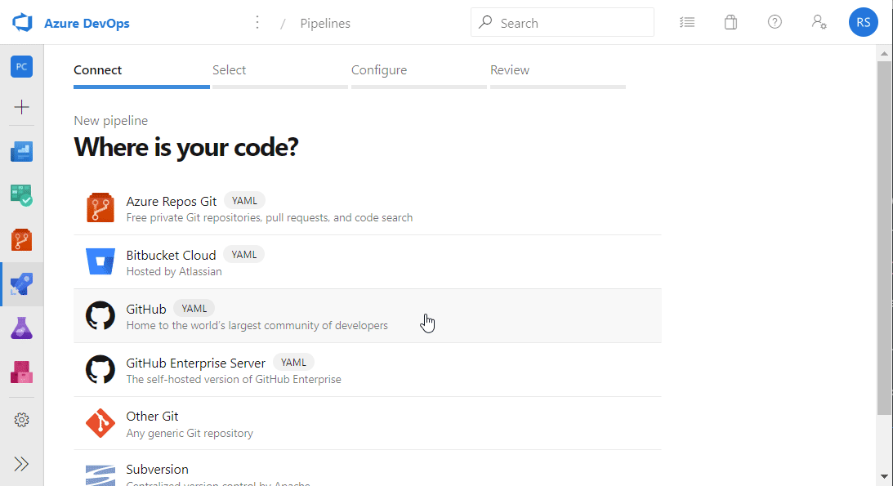
Feel free to fork the same repository if your following along. It was the result of this blog post.
Adding build tasks
The idea here is that we are going to add tasks to our empty agent pool that simulate actual tasks that you (a human), would perform to build the source code locally on your machine.
1. Install required NPM packages
This task should be familiar for most (as should all‚Ķ I‚Äôll say no more). On your PC you run npm install from your projects package.json directory to download the required node modules into the üìÅnode_modules folder. We;ll use the npm task for this and target the üìÅsrc/project.
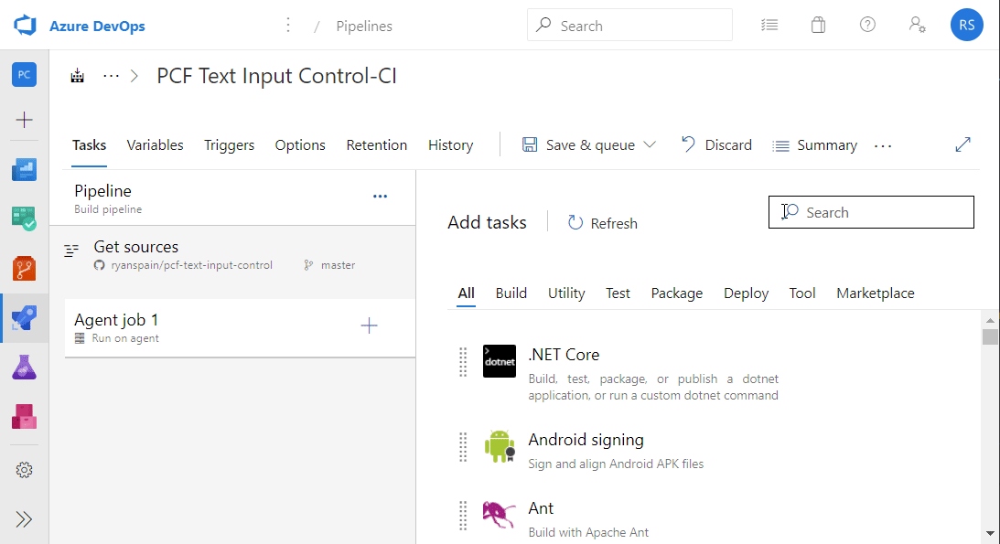
Task: npm
Command: install
Working folder that contains package.json: src/project
2. Build the solution
Awesomely, Power Apps Component Framework controls can be packaged into a Power Apps solution using MSBuild. We just need to target the cdsproj file which references our PCF controls. We’ll use the MSBuild pipeline task.
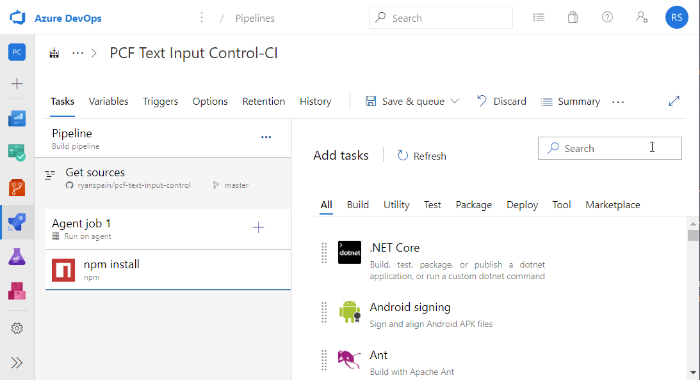
Task: MSBuild
Project: **/*.cdsproj 1
MSBuild Arguments: /t:build /restore /p:configuration=Release 2
1 | We are using a wildcard to find our cdsproj file - my source control only contains one.
2 | The /restore argument makes sure the required NuGet packages are fetched while /p:configuration=Release instructs webpack to run in production mode, reducing the file size of the bundle.js.
Diana Birkelbach does a good solution size comparison over here on her blog.
3. Install Power DevOps Tool Installer
I use Power DevOps tools by Wael Hamze for Power Apps related ALM. Make sure you have that extension installed in your Azure DevOps organization, then add the below task to the agent pool. No properties need to be set for this task.
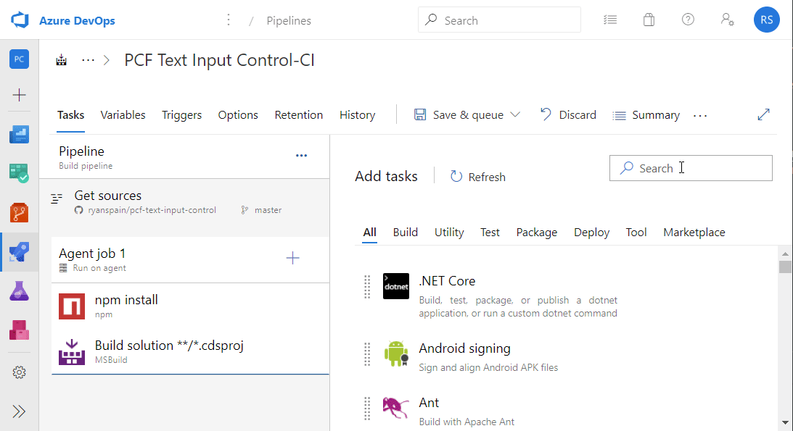
Task: Power DevOps Tool Installer
We could use Microsoft’s Power Apps build tools for Azure DevOps, however, I’m in favor of Power DevOps simply because its more mature and has support for using a connection string in the tasks.
4. Extract the solution
We need to extract the contents of the solution we built using MSBuild so we can perform some actions on it. For this we’ll use the Extract Solution task provided by the extension installed previously. We let this task know what solution ZIP file we want to extract, and where we want it extracted.
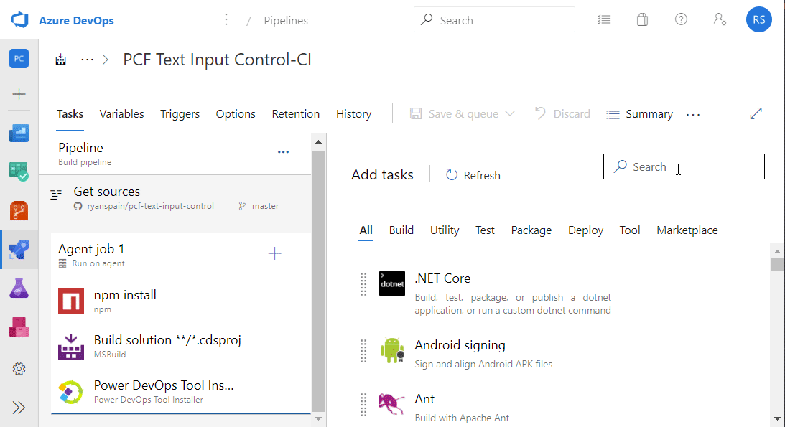
Task: Extract Solution
Unpacked Files Folder: $(Build.ArtifactStagingDirectory)/SolutionExtracted
Solution File: src/solution/bin/Release/solution.zip
5. Set the solution version
We’ll use the build number to set the solution version for the unpacked solution files. Again, using a task provided by Power DevOps, named Set Version.
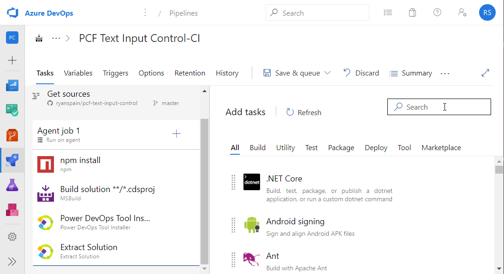
Task: Set Version
Target: Unpacked Solution Customizations
Unpacked Files Folder: $(Build.ArtifactStagingDirectory)/SolutionExtracted 1
Version Number: 1.0.0.$(Build.BuildNumber) 2
1 | Notice we are using tha same directory path again. We should probably use variables for this! More on this a little later.
2 | Build number is a pre-defined variable. We’ve been using these already - more here.
6. Set the PCF control version
This is a little tricky as there is no Azure DevOps task as of yet to update the version attribute on the PCF control node of the manifest file. I settled on writing my own PowerShell function to accomplish this. It set the build number portion of the controls version to the current build number of the pipeline.
1 | function PCF-IncreaseControlBuildNumber($manifestFilePath){ |
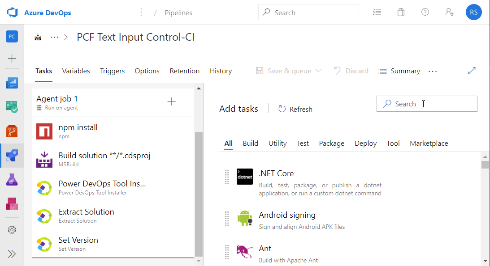
Task: PowerShell
Type: Inline
Script: As above and ensure you update with the path your your manifest file
The initial draft of this post included a reference to a PowerShell function I found over here. However I found an issue with that (that took 2 hours of my life to figure out), and decided to have a go at this myself, without regular expressions! You can check out my pull request on the original source here if your interested.
7. Pack the solution
With the solution and PCF control versions set, we can pack the solutions contents using the Pack Solution task. We’ll tell this task where the solution contents are, and where to place the packed solution ZIP once finished.

Task: Pack Solution
Unpacked Files Folder: $(Build.ArtifactStagingDirectory)/SolutionExtracted
Package Type: Unmanaged
Output Path: $(Build.ArtifactStagingDirectory)/SolutionPacked
8. Publish solution artifact
In order for the release pipeline to have something to release, we need to publish our packed solution ZIP as a build artifact.
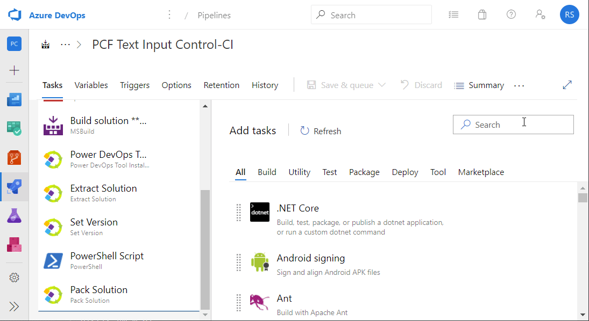
Task: Publish build artifacts
Path to publish: $(Build.ArtifactStagingDirectory)/SolutionPacked
Artifact name: Solution
üß™ Test the build pipeline
Queue the build pipeline, resolve any errors, and wait for it to complete. It should take about 2 minutes and the resulting build artifact should resemble the below.

Creating the release pipeline
From Pipelines > Releases, create a new pipeline using the Empty job template. Give the default stage a name like development or build. Again, I’ll only be deploying to one environment so there will only be one stage in this release pipeline.
Next, use the Add an artifact card and select the build pipeline as the Source. I like to update the Source alias too while I’m here - I set it to _Build. Finally, give your release pipeline a meaningful name.
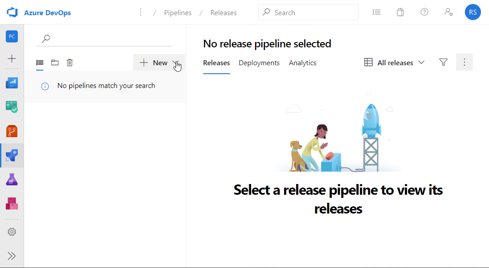
Artifact Source: Build pipeline from
Default version: Latest
Artifact Source alias: _Build
Adding release tasks
This is as simple as just importing the solution ZIP from our build pipeline artifact. Again, we’ll being using the Power DevOps tools so make sure you have that installed in your organization.
1. Install Power DevOps Tool Installer
Open out the stage tasks and add the Power DevOps Tool Installer to the agent pool. There is no configuration required here.
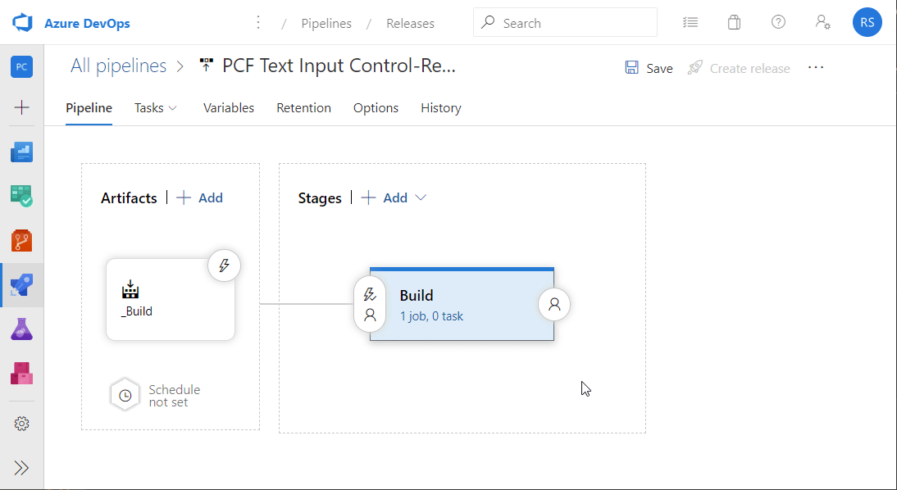
Task: Power DevOps Tool Installer
2. Import solution
Finally, we use the Import Solution task to import the build solution into our Power Apps environment. We just need to provide a connection string and the location of our solution ZIP file.
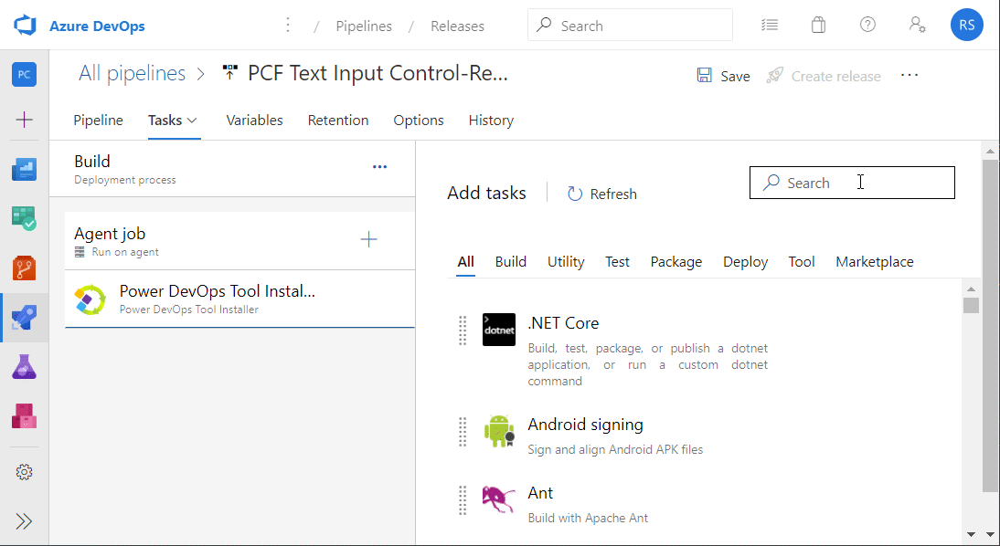
Task: Import Solution
Connection String: Using your preferred authentication type
Solution File: $(Release.PrimaryArtifactSourceAlias)\Solution\TextInputControl.zip 1
1 | Solution is the name given to the artifact we published in the build pipeline while TextInputControl.zip is derived from the name I gave my solution in the Solution.xml in source control.
1 | ... |
üß™ Test the release pipeline
Save your release pipeline and create a new release based on the successful build pipeline. Wait for the release tasks to complete, and once successful, the solution file will have imported into the target environment.
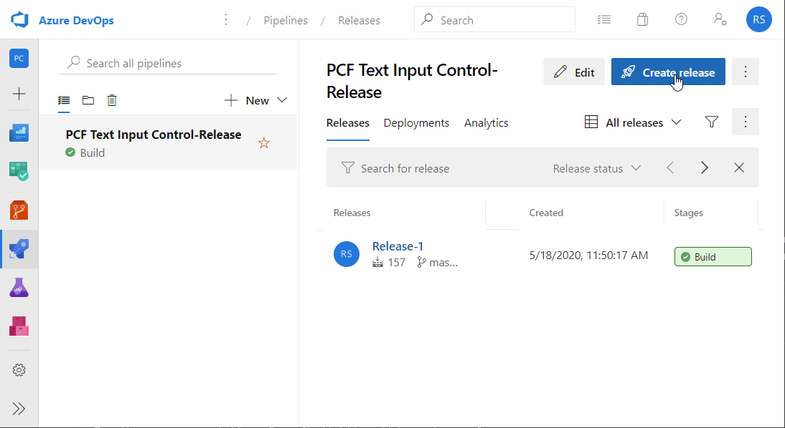
Variables
Throughout this guide, I reused the same string configuration properties for some of the build and release tasks. Some if not all of these string properties are excellent candidates for pipeline variables. In the interest of keeping things clear (I hope), I didn’t create any custom variables. The variable structure I’ve used for my past 3 PCF controls has evolved into the below.
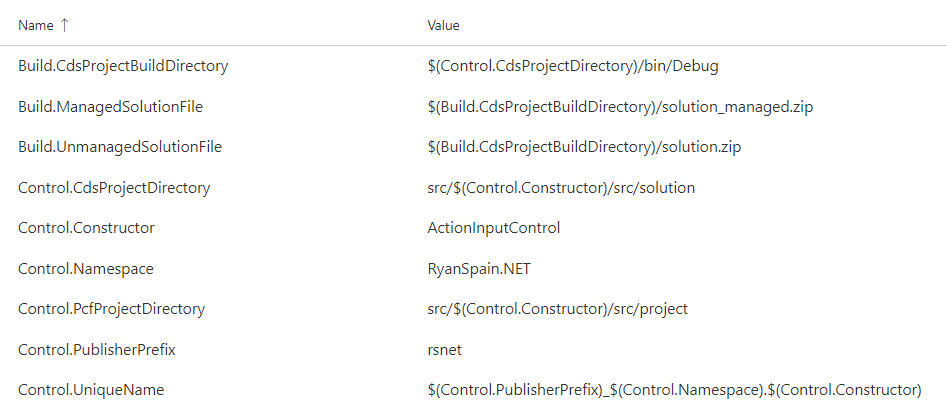
As you can probably tell, there is little duplication in strings. However one could argue it can be a little hard to follow, or update!
I hope you found this post useful in some way or form!